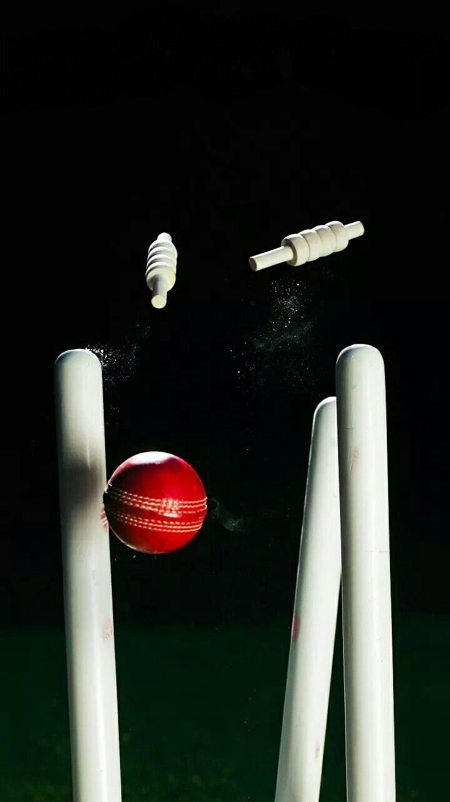

MY FAV HOBBIE - CRICKET

Cricket is my favorite hobby because it is more than just a game to me.
It is something I truly enjoy and look forward to whenever I have free
time. Since childhood, I have loved playing cricket with my friends in
the nearby ground or on the streets. Every match, whether big or small,
brings excitement and creates unforgettable memories.
I enjoy every part of the game, from batting and bowling to fielding.
Batting is my favorite because I love the challenge of scoring runs and
helping my team win. Cricket has taught me many valuable life lessons
such as teamwork, patience, discipline, and never giving up even when
the situation is difficult. It has also improved my concentration,
decision-making, and confidence.
Whenever I feel stressed after studying or working on coding projects,
playing cricket helps me relax and refresh my mind. Spending time
outdoors with friends keeps me physically active and mentally happy. It
is a great way to stay fit while having fun at the same time.
I also enjoy watching international cricket matches and major
tournaments like the ICC Cricket World Cup and the IPL. Watching
professional players inspires me to improve my own game. I like learning
new batting shots, bowling techniques, and fielding skills by observing
experienced players.
For me, cricket is not just a hobby—it is a passion that brings
happiness, energy, and motivation into my life. It teaches me how to
work with others, face challenges with confidence, and always keep
trying until I succeed. I hope to continue playing cricket for many
years because it is an important part of who I am.